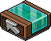

|
|
|
Nr. 2: Möbelzustände
Inhalt:
1. Möbelzustand
2. Beispiel
3. Eingangsschalter
4. Zusatzinfo
1. Möbelzustand
Einige Möbel besitzen mehr als einen Zustand. Ein Zustand ist z. B. Farbfliese = Grün ein anderer Zustand vom selben Möbel ist Farbfliese = Rot. Diese Zustände können manuell umgeschalten werden aber auch mit dem Effekt “Möbelzustände umschalten”. Das Wired schaltet Möbel vom momentanen Zustand auf den nächsten Zustand um. Zusätzlich gibt es einen Auslöser, wenn sich ein Möbelzustand ändert durch einen Habbo (!), dass dann ein Effekt aktiviert werden kann. In Kombination sind diese beiden Wireds sehr hilfreich, z. B. wenn ein User im Raum ohne Rechte einen Gegenstand umschalten möchte obwohl er sie nicht manuell umschalten kann. Wie das funktioniert wird im nächsten Beispiel erklärt.
2. Beispiel
Ziel: Ein User soll durch betätigen eines Bodenschalters eine Zugangssperre öffnen und schließen können.
Wired-Stapel:
Möbelzustände umschalten fixiert auf Zugangssperre
+ Möbel wird verwendet fixiert auf Bodenschalter
Inhalt:
1. Möbelzustand
2. Beispiel
3. Eingangsschalter
4. Zusatzinfo
1. Möbelzustand
Einige Möbel besitzen mehr als einen Zustand. Ein Zustand ist z. B. Farbfliese = Grün ein anderer Zustand vom selben Möbel ist Farbfliese = Rot. Diese Zustände können manuell umgeschalten werden aber auch mit dem Effekt “Möbelzustände umschalten”. Das Wired schaltet Möbel vom momentanen Zustand auf den nächsten Zustand um. Zusätzlich gibt es einen Auslöser, wenn sich ein Möbelzustand ändert durch einen Habbo (!), dass dann ein Effekt aktiviert werden kann. In Kombination sind diese beiden Wireds sehr hilfreich, z. B. wenn ein User im Raum ohne Rechte einen Gegenstand umschalten möchte obwohl er sie nicht manuell umschalten kann. Wie das funktioniert wird im nächsten Beispiel erklärt.
2. Beispiel
Ziel: Ein User soll durch betätigen eines Bodenschalters eine Zugangssperre öffnen und schließen können.
Wired-Stapel:
Möbelzustände umschalten fixiert auf Zugangssperre
+ Möbel wird verwendet fixiert auf Bodenschalter

WIRED Effekt: Möbelzustände umschalten

WIRED Auslöser: Möbel wird verwendet
Verwendung: Im “Möbelzustände umschalten” Wired wird die Zugangssperre ausgewählt. Der Effekt wird sich also auf der Zugangssperre bemerkbar machen und seinen Zustand umschalten sobald der Effekt ausgelöst wurde. Im “Möbel wird verwendet” Wired wird ein Bodenschalter ausgewählt. Ändert ein Habbo den Zustand vom ausgewählten Gegenstand (in dem Fall den Bodenschalter) wird der Auslöser den Effekt Möbelzustände umschalten aktivieren und die Zugangssperre öffnet sich, falls sie geschlossen ist und schließt, wenn sie geöffnet ist. Es können natürlich auch andere Gegenstände verwendet werden für dieses Beispiel.
3. Eingangsschalter
Viele Besitzer von HQ’s (Hauptquartiere) verwenden Eingänge, die durch Schalter geöffnet werden können. So kann jeder Mitarbeiter/Mitglied des HQ’s andere User reinlassen oder den Zugang verwehren. Wie ein Eingangsschalter aussehen könnte wird im folgenden Bild gezeigt:
3. Eingangsschalter
Viele Besitzer von HQ’s (Hauptquartiere) verwenden Eingänge, die durch Schalter geöffnet werden können. So kann jeder Mitarbeiter/Mitglied des HQ’s andere User reinlassen oder den Zugang verwehren. Wie ein Eingangsschalter aussehen könnte wird im folgenden Bild gezeigt:
Es gibt verschiedene Typen aber auf diesen Eingangsschalter-Typ wird jetzt näher eingegangen.
Ziel: Ein User betätigt einen Bodenschalter und die Zugangssperre wird geöffnet. Sobald ein Habbo auf die Zugangssperre tritt wird er zu einem ausgewählten Gegenstand teleportiert.
Stapel A:
zu Möbelstück teleportieren fixiert Möbel der sich in einem bestimmten Bereich im Raum befindet
+ Habbo tritt auf Gegenstand fixiert Zugangssperre
Stapel B:
Möbelzustände umschalten fixiert Zugangssperre
+ Möbel wird verwendet fixiert Bodenschalter
Mit den Roller zwingt man die Person auf die Zugangssperre zu treten, sobald er vom Roller runterfällt und die Zugangssperre geöffnet ist.
Fehlermöglichkeiten: Wichtig ist, dass die Stapeln nicht zusammengefügt werden dürfen, wenn man diese Einstellung haben möchte! Sonst passiert folgendes: Der Habbo, der jemanden öffnen möchte betätigt den Bodenschalter und wird selbst teleportiert. Gleichzeitig öffnet sich die Zugangssperre und derjenige der auf diese tritt wird auch teleportiert. Das möchte man bei einem Eingangsschalter auf jeden Fall verhindern. Wenn ein Effekt nur durch eine bestimmte Sache ausgelöst werden soll darf auch nur ein bestimmter Auslöser auf dem Stapel drauf sein.
4. Zusatzinfo
Eingangsschalter werden vom Prinzip oft so gebaut, jedoch fehlen noch zwei Wichtige Dinge damit sie sinnvoll genutzt werden können. Zum einen Fehlt der Reset, damit jedesmal die Zuganssperre wieder schließt nachdem jemand reingelassen wurde. Das verhindert, dass ausversehen mehrere User rein kommen. Zum anderen muss man sichergehen, dass nur derjenige die Zugangssperre öffnen kann, der auch auf dem Platz sitzt und den Schalter betätigt, denn sonst können nebenstehende stören. Dies wird in der nächsten Lektion gezeigt.
Fehlermöglichkeiten: Wichtig ist, dass die Stapeln nicht zusammengefügt werden dürfen, wenn man diese Einstellung haben möchte! Sonst passiert folgendes: Der Habbo, der jemanden öffnen möchte betätigt den Bodenschalter und wird selbst teleportiert. Gleichzeitig öffnet sich die Zugangssperre und derjenige der auf diese tritt wird auch teleportiert. Das möchte man bei einem Eingangsschalter auf jeden Fall verhindern. Wenn ein Effekt nur durch eine bestimmte Sache ausgelöst werden soll darf auch nur ein bestimmter Auslöser auf dem Stapel drauf sein.
4. Zusatzinfo
Eingangsschalter werden vom Prinzip oft so gebaut, jedoch fehlen noch zwei Wichtige Dinge damit sie sinnvoll genutzt werden können. Zum einen Fehlt der Reset, damit jedesmal die Zuganssperre wieder schließt nachdem jemand reingelassen wurde. Das verhindert, dass ausversehen mehrere User rein kommen. Zum anderen muss man sichergehen, dass nur derjenige die Zugangssperre öffnen kann, der auch auf dem Platz sitzt und den Schalter betätigt, denn sonst können nebenstehende stören. Dies wird in der nächsten Lektion gezeigt.
Zusammenfassung, was ist wichtig?
- Möbellzustände sind z. B. Tür auf/zu oder Farbfliese grün/gelb
- Zustände lassen sich per Mausklick und Wireds ändern
- Mit dem Auslöser "Möbel wird verwendet" wird erkannt, das ein Habbo einen Zustand per Mausklick geändert hat
- Mit dem Effekt "Möbelzustände umschalten" lassen sich die Zustände von Möbeln wechseln
- Funktionsfähige Wired-Stapeln dürfen nicht einfach auf ein Stapel zusammengefasst werden